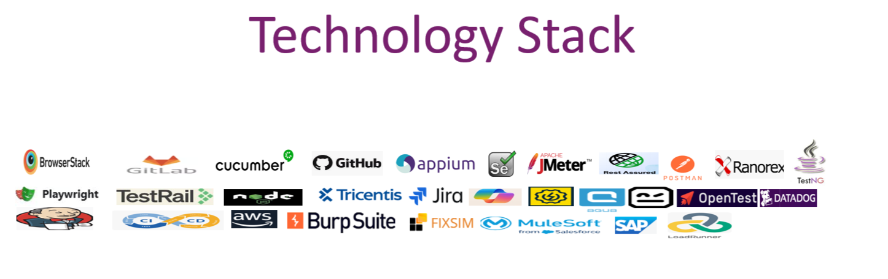

/* Services Page (services.html) */
Services - K2 Consulting
Our Core QA & IT Capabilities
With over 25 years of industry experience, K2 Consulting has been a trusted partner for top financial, healthcare, and Fortune 500 companies, delivering high-quality IT and QA solutions. Our expertise spans across:
Our Services
Providing comprehensive IT QA solutions, including:
- IT Project & Enterprise Program Management – Driving strategic initiatives with seamless execution and governance.
- End-to-End Program Management & IT-QA Governance – Ensuring quality assurance processes align with business objectives.
- Functional & Non-Functional Testing – Validating software reliability, performance, and scalability.
- API Testing – Ensuring seamless integration and data integrity.
- SAP Testing – Delivering robust validation for enterprise resource planning systems.
- Mobile & Web Testing – Enhancing user experience across platforms.
- Cloud Testing – Ensuring performance and security in cloud environments.
- Compliance, Security & Penetration Testing – Safeguarding regulatory adherence and cyber resilience.
- Automation & Manual Testing – Leveraging cutting-edge tools and methodologies for efficiency.
- Staff Augmentation – Providing skilled professionals to meet evolving business needs.
At K2 Consulting, we drive innovation, efficiency, and quality, ensuring business success through tailored solutions and industry-best practices.
